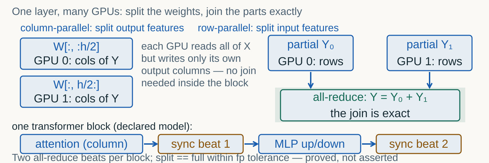
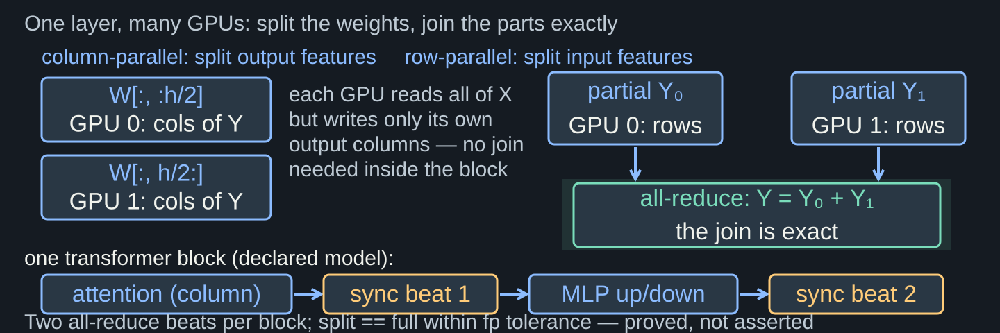
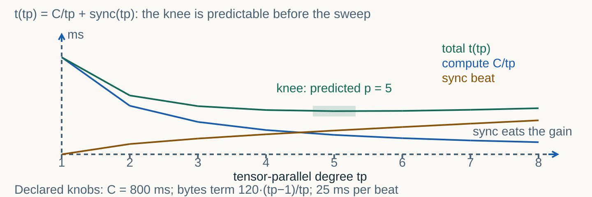
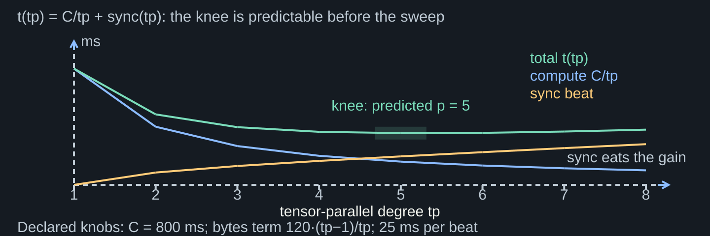
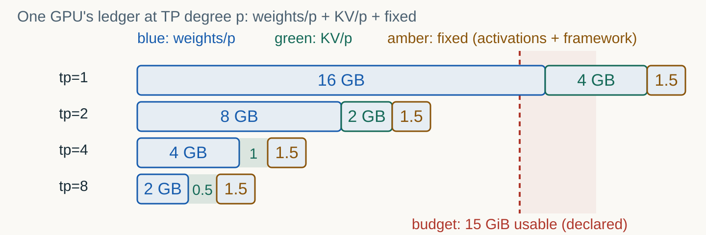
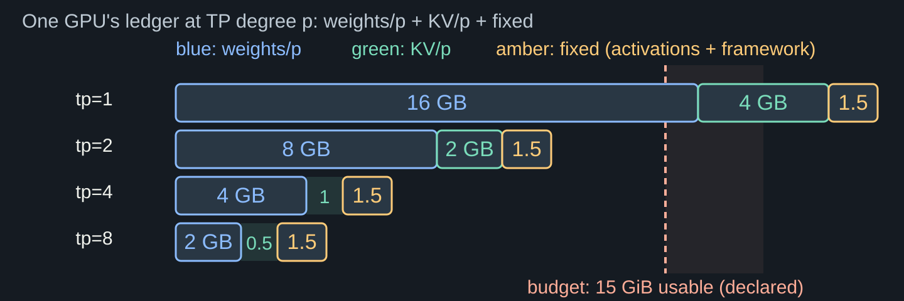

Split the weights exactly, pay the sync beat knowingly — a grand piano carried in step.
Дели веса точно, плати за бит синхронизации осознанно, — рояль, который несут в ногу.
An 8B model in fp16 is ~16 GB of weights alone, plus the KV cache and activations — against a usable budget of ~15 GiB on one accelerator. Does not fit, does not start.
Модель 8B в fp16 — это ~16 ГБ одних лишь весов, плюс KV-кэш и активации, против полезного бюджета ~15 ГиБ на одном ускорителе. Не влезает — не стартует.
Even when it fits: autoregression is a chain, one stream on one device — batching buys throughput, not a shorter token step. A bigger GPU is one answer; axes are another.
Даже когда влезает: авторегрессия — цепочка, один поток на одном устройстве; батчинг покупает throughput, а не короткий токен-шаг. GPU побольше — один ответ; оси — другой.
| AxisОсь | What is splitЧто делится | Pays for it withЧем платит | First choice whenПервый выбор когда |
|---|---|---|---|
| TP | weight matrices of ONE layerматрицы весов ОДНОГО слоя | all-reduce beats (fast bus required)биты all-reduce (нужна быстрая шина) | model does not fit / shorter step, inside one nodeмодель не влезает / короче шаг, внутри одного узла |
| PP | layers across devicesслои по устройствам | pipeline bubblesпузыри конвейера | depth does not fit; slow links toleratedглубина не влезает; медленные линги терпимы |
| DP | nothing — full replicasничего — полные реплики | more hardware, near-zero commбольше железа, почти нулевой comm | model fits; throughput is the goalмодель влезает; цель — throughput |
| EP | experts (MoE)эксперты (MoE) | expert routingмаршрутизация экспертов | mixture-of-experts architecturesархитектуры mixture-of-experts |


MLP up-projection is column-parallel (no join mid-block), down-projection is row-parallel (partials joined by a sum). The lab proves the assembly equals the full matmul to 1e-10 — measured, not asserted.
MLP up-projection — column-parallel (соединения в середине блока нет), down-projection — row-parallel (частичные соединяются суммой). Лаба доказывает, что сборка равна полному matmul до 1e-10, — измерением, а не декларацией.
LayerNorm, residuals and the softmax over the full vocab do not split for free: they are replicated or re-joined at the beats. Two all-reduces per block is the declared price.
LayerNorm, резidualы и softmax по полному словарю бесплатно не делятся: они реплицируются или пересобираются на битах. Два all-reduce на блок — заявленная цена.


From the clean model (no beats, no stragglers) the plan predicts the knee and the minimal fitting degree — frozen into tp-plan.json BEFORE any sweep. The Topic 06 discipline, third outing.
Из чистой модели (без битов, без отстающих) план предсказывает колено и минимальную влезающую степень — замораживается в tp-plan.json ДО всякого свипа. Дисциплина темы 06, третий выход.
The sweep runs the full declared model: per-beat price and straggler multipliers move the knee. A mismatch with the plan is a named mechanism — the beat term — not noise.
Свип гоняет полную заявленную модель: цена бита и множители отстающих двигают колено. Расхождение с планом — поименованный механизм, член бита, а не шум.
| AssemblyСборка | Max-abs error vs full matmulМакс-ошибка против полного matmul | VerdictВердикт |
|---|---|---|
| tp = 1 (identity split)(тождественный разрез) | 0.0 | trivially equalтривиально равны |
| tp = 2 | 8.9e-16 | equal within fp toleranceравны в fp-допуске |
| tp = 4 | 6.7e-16 | equal within fp toleranceравны в fp-допуске |
Weights (16 GB → 8 → 4 → 2) and the KV cache (4 GB → 2 → 1 → 0.5): heads and layers are partitioned, every GPU holds its share.
Веса (16 ГБ → 8 → 4 → 2) и KV-кэш (4 ГБ → 2 → 1 → 0.5): головы и слои разбиты, каждый GPU держит свою долю.
Activations and framework overhead stay ~1.5 GB per GPU at every degree. The budget line (15 GiB usable) judges the WHOLE bar, not the weights row.
Активации и оверхед фреймворка остаются ~1,5 ГБ на GPU при любой степени. Линия бюджета (15 ГиБ полезных) судит ВСЮ полосу, а не строку весов.


| DegreeСтепень | Weights/pВеса/p | KV/p | FixedФикс | TotalИтого | Fits 15 GiBВлезает в 15 ГиБ |
|---|---|---|---|---|---|
| tp=1 | 16 GB | 4 GB | 1.5 | 21.5 GB | no — the wallнет — стена |
| tp=2 | 8 GB | 2 GB | 1.5 | 11.5 GB | yes — minimal fitда — минимальное влезание |
| tp=4 | 4 GB | 1 GB | 1.5 | 6.5 GB | yes — KV headroomда — запас KV |
| tp=8 | 2 GB | 0.5 GB | 1.5 | 4.0 GB | yes — pays beats for nothing hereда — платит за биты без пользы здесь |
Past the knee the sync term dominates: raising the degree RAISES the step. On a narrow bus (PCIe vs NVLink) the knee moves left — sometimes all the way to tp=1.
За коленом член синхронизации доминирует: поднимая степень, ты ПОДНИМАЕШЬ шаг. На узкой шине (PCIe против NVLink) колено уезжает влево — иногда до tp=1.
If the model fits and the batch is wide, DP replicas beat TP: no beats, near-perfect scaling. TP answers «does not fit / shorter step», not «more throughput» at any price.
Если модель влезает и батч широкий, DP-реплики бьют TP: без битов, почти идеальное масштабирование. TP отвечает на «не влезает / короче шаг», а не на «больше throughput любой ценой».
The sync beat waits for everyone: one GPU two times slower sets the whole step. Dividing by tp does not fix an imbalance — it multiplies its exposure.
Бит синхронизации ждёт всех: один GPU вдвое медленнее задаёт весь шаг. Деление на tp не чинит дисбаланс — оно умножает его видимость.
Identical hardware, even partition sizes, no background tenants. The straggler drill reads a transcript where max/median = 2.0 and names the fix.
Одинаковое железо, ровные размеры партиций, никаких фоновых жильцов. Дрилл отстающего читает транскрипт, где max/median = 2.0, и называет фикс.
| DrillДрилл | Transcript saysТранскрипт говорит | Cause → Evidence → FixПричина → Доказательство → Фикс |
|---|---|---|
| comm-boundупор в comm | tp 2→8: compute 401→99 ms falls, total 489→451→... rises past the kneetp 2→8: compute 401→99 мс падает, total 489→451→… растёт за коленом | sync dominates → wall times by degree → lower the degree / faster bus / fewer bytesсинх доминирует → времена стен по степеням → ниже степень / быстрее шина / меньше байтов |
| stragglerотстающий | shards [101, 103, 99, 205] ms — one twice slowerшарды [101, 103, 99, 205] мс — один вдвое медленнее | imbalance → max/median = 2.0 > 1.5 → balance and identical hardwareдисбаланс → max/median = 2.0 > 1.5 → баланс и одинаковое железо |
The clean model is monotone: «the more GPUs the better» — predicted knee p = 8, frozen before the sweep.
Чистая модель монотонна: «чем больше GPU, тем лучше» — предсказанное колено p = 8, заморожено до свипа.
Observed knee p = 5 (354.6 ms declared): the per-beat price and straggler multipliers — the exact terms the plan omitted. Mechanism named; the claim is honest.
Наблюдаемое колено p = 5 (354,6 мс заявлено): цена бита и множители отстающих — ровно те члены, которых план опустил. Механизм назван; заявка честна.
tensor_parallel_size=N is one line of config; NCCL does the joins. The flag starts the machinery — the knee decides whether it helps.
tensor_parallel_size=N — одна строка конфига; соединения делает NCCL. Флаг запускает машинерию — влезает ли она в пользу, решает колено.
The multi-GPU route is an owner demonstration with retained evidence (episode 5, 7, 9 configurations). Students ship the declared CPU lab — no GPU numbers enter their materials.
Мульти-GPU-маршрут — демонстрация владельца с сохранёнными доказательствами (конфигурации эпизодов 5, 7, 9). Студенты сдают заявленную CPU-лабу — GPU-числа в их материалы не входят.
| FieldПоле | ValueЗначение | WhyПочему |
|---|---|---|
| flagфлаг | tensor_parallel_size | the only TP knob vLLM exposes at top levelединственная TP-ручка vLLM на верхнем уровне |
| minimal fit for the 8B exampleминимальное влезание для примера 8B | 2 | ledger: 16/2 + 4/2 + 1.5 = 11.5 GB ≤ 15 GiBведомость: 16/2 + 4/2 + 1,5 = 11,5 ГБ ≤ 15 ГиБ |
| preconditionпредусловие | fast interconnect inside one nodeбыстрый интерконнект внутри одного узла | two all-reduce beats per block, every layerдва бита all-reduce на блок, каждый слой |
| evidence routeмаршрут доказательств | owner demonstration, separate recordдемонстрация владельца, отдельная запись | no student GPU numbers in course materialsникаких студенческих GPU-чисел в материалах курса |
The split proof is real NumPy (error ≤ 1e-10); every millisecond is declared arithmetic with named knobs written on the slides and in the notebook.
Доказательство разреза — настоящий NumPy (ошибка ≤ 1e-10); каждая миллисекунда — заявленная арифметика с поименованными ручками, написанными на слайдах и в тетради.
Real all-reduce latencies, NCCL behaviour, thermal stragglers: the multi-GPU vLLM demonstration is an owner record. A student quoting 354.6 ms as hardware has failed the reading.
Настоящие латентности all-reduce, поведение NCCL, тепловые отстающие: демонстрация мульти-GPU vLLM — запись владельца. Студент, цитирующий 354,6 мс как железо, провалил чтение.
| BlockБлок | You doВы делаете | It is done whenГотово когда |
|---|---|---|
| 0 PredictПредскажи | Freeze the knee prediction and the fit degreeЗаморозь предсказание колена и степень влезания | tp-plan.json exists before any sweeptp-plan.json существует до всякого свипа |
| 1 ProveДокажи | Write the shards and the all-reduce; compare to fullНапиши шарды и all-reduce; сравни с полным | split == full to 1e-10 in the journalразрез == целый до 1e-10 в журнале |
| 2 SweepСвип | Degrees 1..8 through the declared engineСтепени 1..8 через заявленный движок | sweep.json + measured-vs-clean curvesweep.json + кривая измеренное-против-чистого |
| 3 LedgerВедомость | Itemise per-GPU memory; decide the minimal fitРаспиши память на GPU; реши минимальное влезание | ledger.json + the fit lineledger.json + строка влезания |
| 4 DrillsДриллы | Classify comm-bound and straggler transcriptsКлассифицируй транскрипты упора в comm и отстающего | cause/evidence/fix in drills.jsonпричина/доказательство/фикс в drills.json |
| StretchСложность | Axis map + the vLLM TP cardКарта осей + карточка vLLM TP | placement paragraphs writtenабзацы о размещении написаны |
Topic 09 made the unit immutable; Topic 10 multiplied ONE unit across the GPUs of one node — with its own ledger (memory) and its own beats (sync).
Тема 09 сделала единицу неизменяемой; тема 10 размножила ОДНУ единицу по GPU одного узла — со своей ведомостью (память) и своими битами (синх).
Kubernetes schedules such units across machines. None of it composes if each scaling layer hides its own ledger: GPU ledger today, pod ledger next.
Kubernetes планирует такие единицы по машинам. Ничто не составится, если каждый слой масштабирования прячет свою ведомость: сегодня ведомость GPU, дальше — ведомость пода.
Predict the knee. Prove the split. Ledger the memory.
Name the mechanism. Journal everything.
Предскажи колено. Докажи разрез. Веди ведомость памяти.
Назови механизм. Журналируй всё.